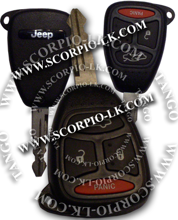

|
Unlock PCF7941 |
Top Previous Next |
|
This method is applicable to some models of Chrysler, such as Grand Cherokee, Voyager (Caravan), 300C... It is not suitable for Pacifica 2004. Used keys are permanently locked and cannot be re-used on another car. The utility can unlock the used key. The key can be further used on any vehicle.
Instructions Open the "Unlock PCF7941" utility. The "Key Combination" window displays start code from that begins searching. By default it is 00 00...00.  Place a key in the antenna area and click the "Start attack" button. The utility begins code searching. The process may take a long time. If it is needed to interrupt searching click the "Abort" button that stops the process. Write down the number you see in the "Key Combination" window. It is the current key combination. Next time you decide to continue searching enter this number in the "Key Combination" field before procedure starting.
The utility uses the brute force attack to determine the valid key combination. Full range of combinations requires up to 36 hours of time. In practice, an attack continues in range of several minutes to 2 - 3 hours. |